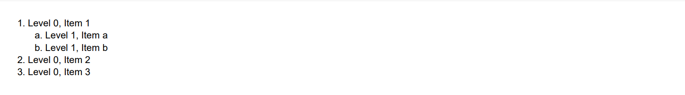
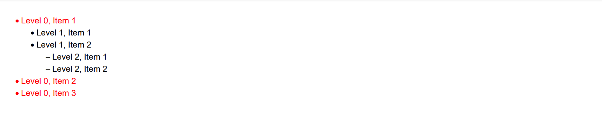
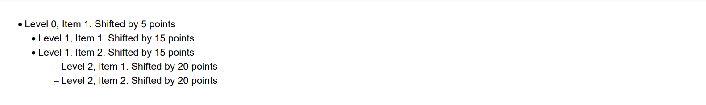
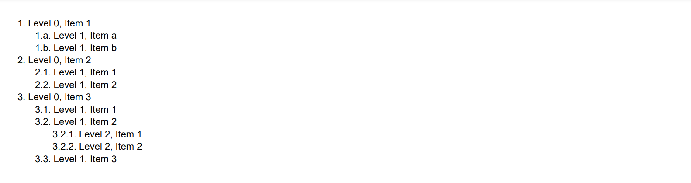
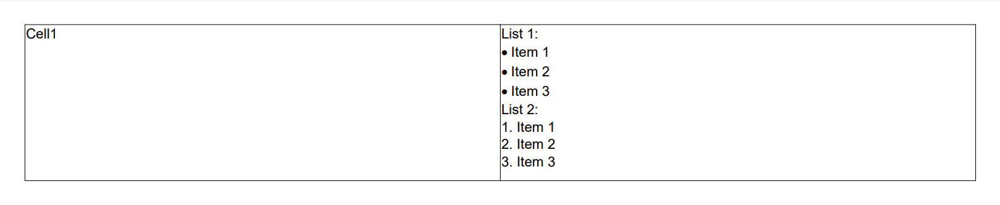
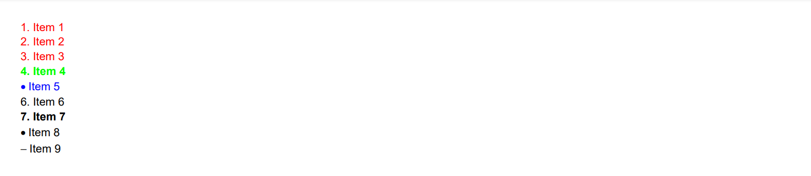

Creating Multilevel List
Brief
The article describes how to create a multilevel list.
Details
A section may have as many multilevel lists as you need.
You can make a paragraph an item of a numbered multilevel list using the
ParagraphBuilder.SetListNumbered method.
For each item, you can specify the numbering style, the level of the list, the left indent, and enable the hierarchic numeration is necessary.
Items of a numbered list are numbered automatically on each level.
The available numbering styles are: Arabic numbers, lower and upper Roman numbers, lower and upper Latin letters, lower and upper Cyrillic letters
(see the NumerationStyle enumeration).
You can make a paragraph an item of a bulleted multilevel list using the
ParagraphBuilder.SetListBulleted method.
For each item, you can specify the bullet symbol, the level of the list, and the left indent.
The available bullet symbols are a bullet and a dash (see the ListBullet enumeration).
The default level left indent for a multilevel list is 20f, the default numbering style of a numbered list is Arabic,
the default bullet symbol is Bullet.
You can configure the formatting settings of list items directly or apply a style to them using methods of
ParagraphBuilder.
You can also set a style for all lists in the section using the
SectionBuilder.SetListStyle() method.
In this case, you can use the ParagraphBuilder.SetList method to quickly
make the necessary paragraphs list items and the set style will be applied to all list items in the section.
For more on working with styles, see the article Formatting and Styles.
Once a paragraph which is not an item of a multilevel list is met, the multilevel list is considered completed.
When later another paragraph is made an item of a multilevel list, it becomes the first item of a new multilevel list, and its automatic numeration will start from the beginning.
See also
Examples
Example 1. Create a numbered list [hide]
var latin = NumerationStyle.LowerLatin;
DocumentBuilder.New()
.AddSection()
.AddParagraph("Level 0, Item 1").SetListNumbered().ToSection()
.AddParagraph("Level 1, Item a").SetListNumbered(latin, 1).ToSection()
.AddParagraph("Level 1, Item b").SetListNumbered(latin, 1).ToSection()
.AddParagraph("Level 0, Item 2").SetListNumbered().ToSection()
.AddParagraph("Level 0, Item 3").SetListNumbered().ToDocument()
.Build("Result.pdf");
The above code will generate the following:

See the documentExample 1a. Create a numbered list (using configuration actions) [show]
Example 2. Create a bulleted list [hide]
DocumentBuilder.New()
.AddSection()
.AddParagraph("Level 0, Item 1")
.SetFontColor(Color.Red)
.SetListBulleted().ToSection()
.AddParagraph("Level 1, Item 1")
.SetListBulleted(ListBullet.Bullet, 1).ToSection()
.AddParagraph("Level 1, Item 2")
.SetListBulleted(ListBullet.Bullet, 1).ToSection()
.AddParagraph("Level 2, Item 1")
.SetListBulleted(ListBullet.Dash, 2).ToSection()
.AddParagraph("Level 2, Item 2")
.SetListBulleted(ListBullet.Dash, 2).ToSection()
.AddParagraph("Level 0, Item 2")
.SetFontColor(Color.Red)
.SetListBulleted().ToSection()
.AddParagraph("Level 0, Item 3")
.SetFontColor(Color.Red)
.SetListBulleted().ToDocument()
.Build("Result.pdf");
The above code will generate the following:

See the documentExample 3. Set level indent values [hide]
DocumentBuilder.New()
.AddSection()
.AddParagraph("Level 0, Item 1. Shifted by 5 points")
.SetListBulleted(ListBullet.Bullet, 0, 5).ToSection()
.AddParagraph("Level 1, Item 1. Shifted by 15 points")
.SetListBulleted(ListBullet.Bullet, 1, 15).ToSection()
.AddParagraph("Level 1, Item 2. Shifted by 15 points")
.SetListBulleted(ListBullet.Bullet, 1, 15).ToSection()
.AddParagraph("Level 2, Item 1. Shifted by 20 points")
.SetListBulleted(ListBullet.Dash, 2, 20).ToSection()
.AddParagraph("Level 2, Item 2. Shifted by 20 points")
.SetListBulleted(ListBullet.Dash, 2, 20).ToDocument()
.Build("Result.pdf");
The above code will generate the following:

See the documentExample 4. Set hierarchic numeration [hide]
var latin = NumerationStyle.LowerLatin;
var arabic = NumerationStyle.Arabic;
DocumentBuilder.New()
.AddSection()
.AddParagraph("Level 0, Item 1")
.SetListNumbered().ToSection()
.AddParagraph("Level 1, Item a")
.SetListNumbered(latin, 1, hierarchicNumeration: true).ToSection()
.AddParagraph("Level 1, Item b")
.SetListNumbered(latin, 1, hierarchicNumeration: true).ToSection()
.AddParagraph("Level 0, Item 2")
.SetListNumbered().ToSection()
.AddParagraph("Level 1, Item 1")
.SetListNumbered(arabic, 1, hierarchicNumeration: true).ToSection()
.AddParagraph("Level 1, Item 2")
.SetListNumbered(arabic, 1, hierarchicNumeration: true).ToSection()
.AddParagraph("Level 0, Item 3")
.SetListNumbered().ToSection()
.AddParagraph("Level 1, Item 1")
.SetListNumbered(arabic, 1, hierarchicNumeration: true).ToSection()
.AddParagraph("Level 1, Item 2")
.SetListNumbered(arabic, 1, hierarchicNumeration: true).ToSection()
.AddParagraph("Level 2, Item 1")
.SetListNumbered(arabic, 2, hierarchicNumeration: true).ToSection()
.AddParagraph("Level 2, Item 2")
.SetListNumbered(arabic, 2, hierarchicNumeration: true).ToSection()
.AddParagraph("Level 1, Item 3")
.SetListNumbered(arabic, 1, hierarchicNumeration: true).ToDocument()
.Build("Result.pdf");
The above code will generate the following:

See the documentExample 5. Add a list to a table [hide]
DocumentBuilder.New()
.AddSection()
.AddTable()
.AddColumnToTable().AddColumnToTable()
.AddRow()
.AddCellToRow("Cell1")
.AddCell()
.AddParagraphToCell("List 1:")
.AddParagraph("Item 1").SetListBulleted().ToCell()
.AddParagraph("Item 2").SetListBulleted().ToCell()
.AddParagraph("Item 3").SetListBulleted().ToCell()
.AddParagraphToCell("List 2:")
.AddParagraph("Item 1").SetListNumbered().ToCell()
.AddParagraph("Item 2").SetListNumbered().ToCell()
.AddParagraph("Item 3").SetListNumbered()
.ToDocument().Build("Result.pdf");
The above code will generate the following:

See the documentExample 6. Set the style and formatting for a list and list items [hide]
// Set a style for all lists in the section: numbered, font color red:
StyleBuilder listStyleInCurrentSection = StyleSheet.DefaultListNumberedBuilder().SetFontColor(Color.Red);
StyleBuilder styleBlue = StyleBuilder.New().SetFontColor(Color.Blue);
StyleBuilder styleListBold = StyleBuilder.New(StyleSheet.DefaultListNumberedBuilder()).SetFontBold();
// Create document:
DocumentBuilder.New()
.AddSection()
// Set a style for the lists found in current section:
.SetListStyle(listStyleInCurrentSection)
// Create a list, it will be numbered and have red font color as defined by the list style for the section:
.AddParagraph("Item 1").SetList().ToSection()
.AddParagraph("Item 2").SetList().ToSection()
.AddParagraph("Item 3").SetList().ToSection()
// Set formatting of one item:
.AddParagraph("Item 4").SetList()
.SetBold()
.SetFontColor(Color.Green)
.ToSection()
// Apply Blue style to paragraph, then apply list formatting. It will be bulleted, because direct ApplyStyle() has higher priority than s.SetListStyle():
.AddParagraph("Item 5").ApplyStyle(styleBlue)
.SetList().ToSection()
// Make a paragraph a list item:
.AddParagraph("Item 6").ApplyStyle(StyleSheet.DefaultListNumberedBuilder())
.ToSection()
// Make a paragraph a list item and apply the Bold style:
.AddParagraph("Item 7").ApplyStyle(styleListBold).ToSection()
// Apply the Bulleted style to a list item. It will be bulleted because the direct ApplyStyle() has a higher priority than s.SetListStyle():
.AddParagraph("Item 8").ApplyStyle(StyleSheet.DefaultListBulletedBuilder())
.ToSection()
// First apply the numbered style, then set the bulleted formatting. The list will be bulleted because the formatting has a higher priority than the style:
.AddParagraph("Item 9").ApplyStyle(StyleSheet.DefaultListNumberedBuilder())
.SetListBulleted(ListBullet.Dash)
.ToSection()
.ToDocument().Build("Result.pdf");
The above code will generate the following:

See the document